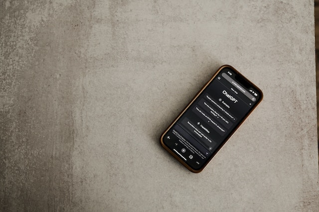
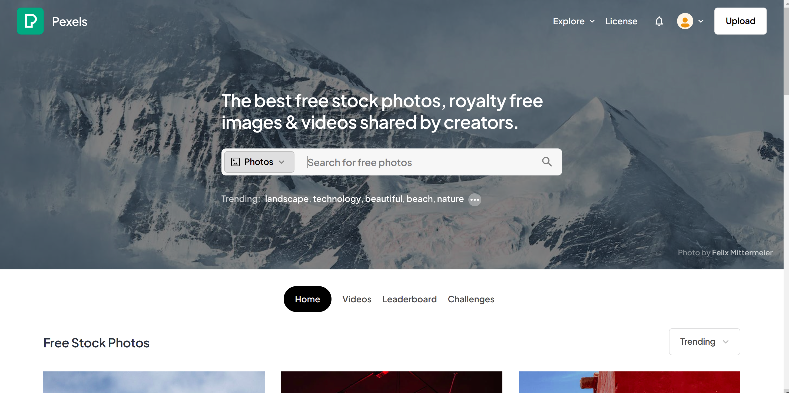

How to Build a Website with Chat GPT
Are you looking to build a website but don't have the technical expertise to code it from scratch? Look no further than Chat GPT, a cutting-edge language model that can help you create a website quickly and easily. In this post, we'll explore how Chat GPT can help you build a website, and provide tips for optimizing your site for search engines. Can Chat GPT Build a Website? The short answer is yes. Chat GPT can help you build a website by generating code based on your input. This can save you time and effort, especially if you're not familiar with HTML, CSS, and JavaScript. How to Use Chat GPT to Build a Website To get started with Chat GPT, you'll need to provide some basic information about your website, such as the layout, color scheme, and content. Chat GPT will then generate code based on your input, which you can use to create your website. Tips for Optimizing Your Website for Search Engines While Chat GPT can help you build a website, it's still important to optimize your site for search engines. Here are some tips to help improve your website's visibility in search results: Use relevant keywords in your content and meta tags Make sure your website is mobile-friendly Ensure your website loads quickly Use descriptive alt tags for your images Include internal links to other pages on your website Other Tools for Building a Website While Chat GPT is a great tool for building a website, it's not the only option out there. Here are some other tools you might consider: WordPress: A popular content management system that's easy to use and highly customizable. Wix: A drag-and-drop website builder that's ideal for beginners. Squarespace: A website builder that offers beautiful templates and robust features. In conclusion, building a website doesn't have to be a daunting task. With the help of Chat GPT, you can create a website quickly and easily, even if you don't have technical expertise. By following our tips for optimizing your site for search engines, you can ensure that your website gets the visibility it deserves. So what are you waiting for? Give Chat GPT a try and start building your website today!
The Basic Steps for building a static site using chatgpt and getting it live on the web are:
- Open a code editor or text editor and create a new HTML file.
- Use ChatGPT to generate code for a basic HTML layout. You can use prompts like "Generate HTML code for a basic homepage" or "Generate HTML code for a navbar".
- Copy and paste the generated HTML code into your HTML file.
- Use CSS to style your HTML code. You can use prompts like "Generate CSS code for a homepage" or "Generate CSS code for a navbar".
- Copy and paste the generated CSS code into a new CSS file, and link it to your HTML file.
- Add any additional content or pages to your website by repeating steps 2-5.
- Create a new repository on GitHub by clicking on the "New" button on your GitHub profile page.
- Name your repository and select "Public" or "Private", depending on your preference.
- Initialize a Git repository on your local machine using the command line. Navigate to the folder containing your HTML and CSS files and run the command git init.
- Add all files to the Git repository using the command git add ..
- Commit the changes using the command git commit -m "Initial commit".
- Connect your local Git repository to your remote GitHub repository using the command git remote add origin https://github.com/your-username/your-repository.git.
- Push the changes to your GitHub repository using the command git push -u origin main.
- Create a Vercel account at vercel.com/signup.
- Click on "Import Project" on your Vercel dashboard and select "Import Git Repository".
- Connect your GitHub account to Vercel and select the repository you just created.
- Configure your settings, such as the name of your project and the domain name you want to use.
- Deploy your website by clicking on "Deploy" on your Vercel dashboard.
Prompt 1: Generate a basic HTML template
Prompt: Generate a basic HTML template with a title, a header, and a body.
Generated HTML code:
<!DOCTYPE html>
<html>
<head>
<title>Page Title</title>
</head>
<body>
<h1>This is a Heading</h1>
<p>This is a paragraph.</p>
</body>
</html>
Prompt 2: Generate a navigation bar
Prompt: Generate an HTML code for a navigation bar with links to Home, About Us, Services, and Contact Us pages.
Generated HTML code:
<nav>
<ul>
<li><a href="#">Home</a></li>
<li><a href="#">About Us</a></li>
<li><a href="#">Services</a></li>
<li><a href="#">Contact Us</a></li>
</ul>
</nav>
Prompt 3: Generate a hero section
Prompt: Generate an HTML code for a hero section with a background image, a heading, and a button.
Generated HTML code:
<section class="hero">
<div class="hero-image" style="background-image: url('image.jpg');">
<div class="hero-content">
<h1>Welcome to our website</h1>
<button>Learn more</button>
</div>
</div>
</section>
Also remember to keep the image in the smae folder as your html file, you can get stunning images free images from pexels.

I handpicked some from pexels for you!


Prompt 4: Generate a footer
Prompt: Generate an HTML code for a footer with copyright information and links to social media profiles.
Generated HTML code:
<footer>
<p>© 2023 My Website. All rights reserved.</p>
<div class="social-links">
<a href="#"><i class="fab fa-facebook-f"></i></a>
<a href="#"><i class="fab fa-twitter"></i></a>
<a href="#"><i class="fab fa-instagram"></i></a>
</div>
</footer>
Prompt 5: Generate corresponding css code for styling the pages by the prompt
Prompt: now generate css code for all the other html code we generated before
You can use these generated codes to build your website's homepage, navigation bar, hero section, and footer. Once you've created your website using these prompts and codes, you can host it on Vercel by pushing it to GitHub and adding a custom domain using a domain provider.
Sure! Here are some CSS snippets for the HTML code we generated earlier:
CSS for the homepage:
/* Center the content */
.container {
max-width: 960px;
margin: 0 auto;
}
/* Style the heading */
h1 {
font-size: 3em;
text-align: center;
margin-top: 3em;
}
/* Style the paragraphs */
p {
font-size: 1.2em;
line-height: 1.5;
margin-bottom: 1.5em;
}
/* Style the button */
.button {
display: block;
width: 150px;
margin: 2em auto;
padding: 1em;
background-color: #f9c74f;
color: #333;
font-size: 1.2em;
text-align: center;
border-radius: 10px;
text-decoration: none;
}
CSS for the navbar:
/* Style the navbar */
nav {
background-color: #333;
}
/* Center the navbar */
nav ul {
margin: 0;
padding: 0;
text-align: center;
}
/* Style the links */
nav ul li {
display: inline-block;
margin: 0;
}
nav ul li a {
display: block;
padding: 1em;
color: #fff;
text-decoration: none;
}
nav ul li a:hover {
background-color: #f9c74f;
color: #333;
}
CSS for the hero section:
/* Style the hero section */
.hero {
background-color: #333;
color: #fff;
text-align: center;
padding: 5em 0;
}
/* Style the hero image */
.hero-image {
background-position: center center;
background-repeat: no-repeat;
background-size: cover;
height: 100vh;
display: flex;
align-items: center;
justify-content: center;
}
/* Style the hero content */
.hero-content {
max-width: 800px;
margin: 0 auto;
}
.hero-content h1 {
font-size: 4em;
margin-bottom: 0.5em;
}
.hero-content button {
padding: 1em 2em;
background-color: #f9c74f;
color: #333;
border-radius: 10px;
font-size: 1.2em;
border: none;
cursor: pointer;
}
CSS for the footer:
/* Style the footer */
footer {
background-color: #333;
color: #fff;
text-align: center;
padding: 2em;
}
/* Style the social links */
.social-links {
display: flex;
justify-content: center;
margin-top: 1em;
}
.social-links a {
display: inline-block;
margin: 0 0.5em;
color: #fff;
text-decoration: none;
font-size: 1.2em;
}
.social-links a:hover {
color: #f9c74f;
}
You can save all the css in a file let's say it is 'style.css' in the same folder as html file and import it in the header section of the html file to aplly the style.
<head>
<meta charset="UTF-8">
<meta name="viewport" content="width=device-width, initial-scale=1.0">
<title>My Website</title>
<link rel="stylesheet" href="style.css">
</head>
Hosting on Vercel:
Once you push the code to a new github repository you can create an account on vercel and import the repository from github on it. And all you have to do is to click deploy and it will be automtically deployed.
Tip: Keep the name of the html file as index.html for vercel to understand it as the main file.
Finally add a domain to your site, you can do this at the beginning of all things when you need to find a particular name. Or at the end whichever way you wish to do
You can get your domain from Domain sellers like GoDaddy, Hostinger, NameCheap etc.
To connect your domain to your site hosted on vercel do the following:
- Go to your Vercel dashboard and click on the project that you want to connect to your domain.
- Click on "Settings" on the sidebar and then select "Domains" from the dropdown menu.
- Click on "Add" and enter your domain name in the text box. Click on "Verify".
- You will be given a set of DNS records to add to your domain registrar. These records are unique to your project, so make sure to copy them correctly.
- Go to your domain registrar and log in to your account. Look for the option to manage DNS records for your domain.
- Add the DNS records provided by Vercel to your domain registrar's DNS settings.
- Wait for the DNS changes to propagate. This can take anywhere from a few minutes to a few hours.
- Once the DNS changes have propagated, go back to the Vercel dashboard and click on "Domains" again.
- Select the domain you just added and click on "Set Up".
- You will be given the option to set up SSL certificates for your domain. Follow the prompts to set up SSL.
Your site is now connected to your domain! It may take a few minutes for the SSL certificate to be fully set up and for your site to become available at the new domain.
Thanks for reading till now. If you need to build a site and want someone to do it for you, you can contact me for the same!